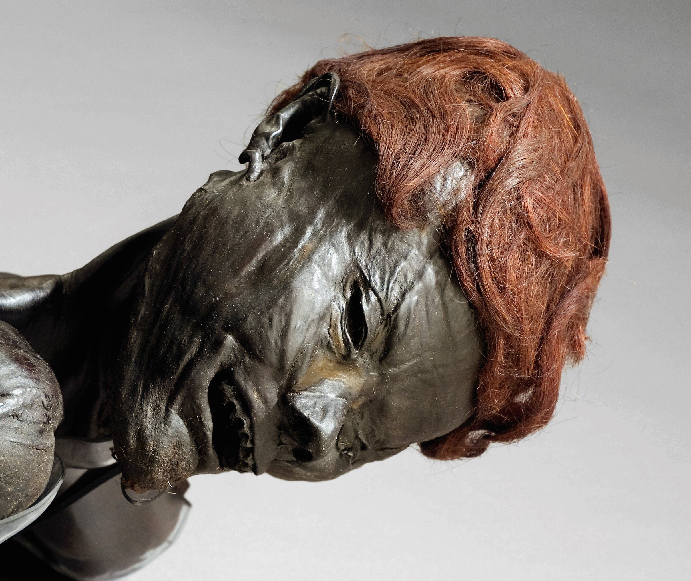
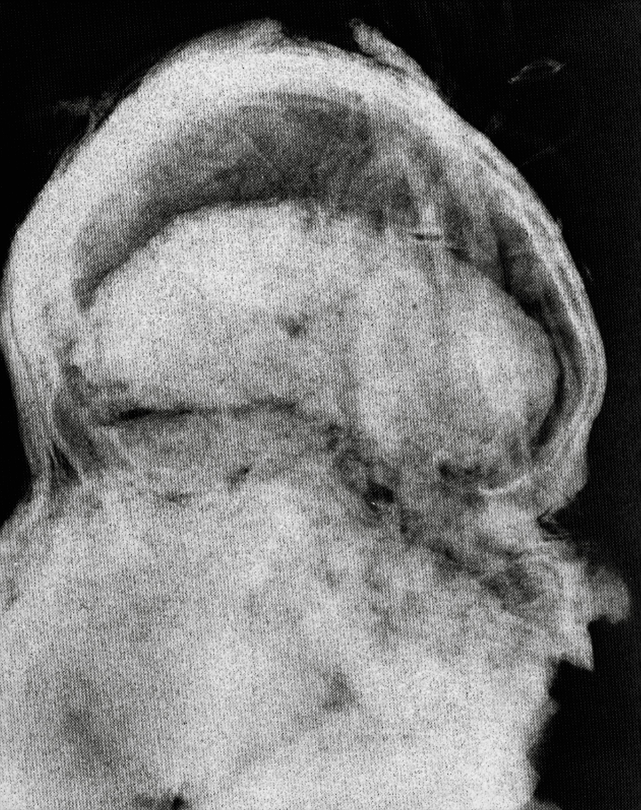
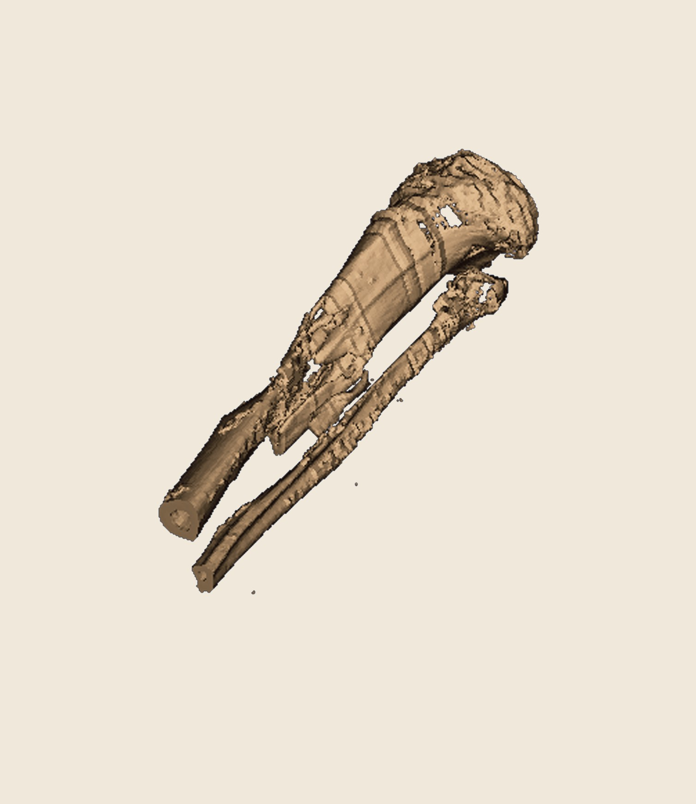
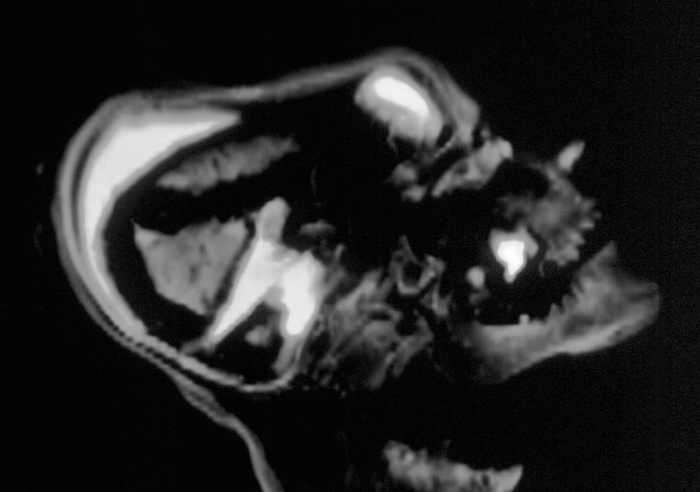
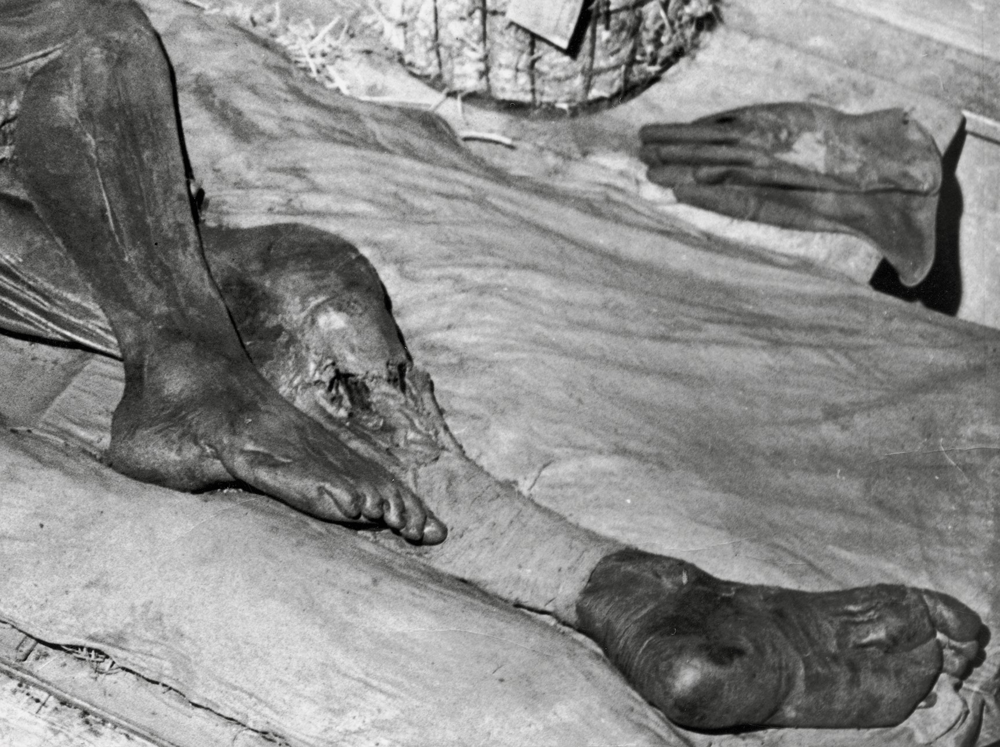

Grauballemandens hår
Grauballemandens hår er mørkeblond, næsten brunligt, og dets farve er et resultat af de kemiske processer, der
fandt sted, da han blev bevarret i mosen. Hårfarven som sådan er et resultat af melanin, det pigment, der
bestemmer farven på hår, hud og øjne. I jernalderen var der naturligt stor variation i hårfarve blandt
befolkningen, og det er muligt, at Grauballemanden var en person med en naturlig mørkeblond hårfarve, som ikke
nødvendigvis adskiller sig meget fra den hårfarve, mange danskere har i dag.
Men det er ikke kun Grauballemandens genetiske baggrund, der har betydning for hans hårfarve. Hårfarven er også
blevet påvirket af de unikke betingelser i den mos, hvor han blev fundet. Mosen har fungeret som et slags
konserveringsmiddel, idet den skabte en iltfattig og sur miljø, som hæmmede nedbrydning af det organiske
materiale. Herved blev både hans hår og andre væv bevaret.


Desuden har Grauballemandens hårfarve givet forskere vigtige ledetråde om hans oprindelse og genetiske træk.
Undersøgelser af hans hår og andre biologiske prøver har afsløret, at han sandsynligvis var en nordisk mand med
genetiske træk, der kunne være typiske for de mennesker, der levede i Skandinavien på den tid.
I det store billede er Grauballemandens hår en vigtig del af hans historie, både som et arkæologisk fund og som
et vidnesbyrd om den menneskelige tilpasning til jernalderens miljø og forhold. Det fortæller ikke kun om hans
udseende, men også om de specielle betingelser, der gjorde det muligt for ham at blive bevaret som en af de mest
velbevarede jernaldermumier i verden.
Grauballemandens brud
Det kan være vanskeligt at vurdere et moseligs skelet, da de tusinder af år i mosen fører til en betydelig
afkalkning af knoglemineraler, hvilket gør knoglerne næsten usynlige på almindelige røntgenbilleder.
Da Grauballemanden først blev fundet og undersøgt, blev der taget røntgenbilleder af ham, men datidens teknik
var ikke så præcis som i dag. Man mente dengang, at der var et brud i skinnebenet og kraniebrud.


For nylig har nye undersøgelser af Grauballemanden ved hjælp af CT-scanning bekræftet, at der faktisk er brud
både i skinnebenet og kraniet. Ved at sammenligne disse brud med, hvad retsmedicinske eksperter i dag ved om
friske knoglebrud, ligner de dog ikke friske skader. I stedet tyder det på, at bruddene er opstået som følge af
hans ophold i mosen, hvor knoglerne over tid er blevet afkalkede, bløde og skrøbelige. På grund af jordens
bevægelser kan knoglerne bøje og brække, og det er sandsynligvis det, der er sket med Grauballemanden.


Med dette in mente er det usandsynligt, at Grauballemanden blev slået i hovedet for at blive bevidstløs eller
fik brækket skinnebenet for at forhindre flugt før en henrettelse. De nye retsmedicinske undersøgelser peger
derimod på, at Grauballemanden sandsynligvis blev henrettet ved et snit i halsen, og at der ikke foreligger tegn
på voldsom vold mod ham før dette. De observerede brud i knoglerne skyldes formentlig hans mangeårige ophold i
mosen.
Grauballemandens tænder
Grauballemanden har i dag ingen tænder tilbage i munden, da nogle af dem faldt ud under hans tid i mosen og
efterfølgende blev omhyggeligt udgravet. For at give et mere naturligt udseende er hans kæber blevet fyldt ud
med et materiale, så man ved første øjekast ikke bemærker, at han er tandløs. Det ville have set unaturligt ud
at sætte de små tænder tilbage i munden, så tandløsheden blev i stedet kamufleret. Tænderne opbevares nu i
Moesgaards arkiver og vises ikke frem i udstillingen.
Ved udgravningen i 1950’erne deltog tandlæger, som lavede gipsmodeller af Grauballemandens kæber. Derfor findes
der detaljerede oplysninger om kæbernes tilstand på udgravningstidspunktet, og disse gipsmodeller, scanninger og
røntgenbilleder fortæller os meget om ham. For eksempel ser man, at han havde mistet en fortand i undermunden og
knækket tanden ved siden af, sandsynligvis som følge af et slag. Kæben havde helet sig, så dette skete
formentlig 1-2 år før hans død.
Grauballemandens tænder er også ekstremt slidte – de er så flade som fodboldbaner, hvilket var almindeligt for
mennesker fra hans tid. Kosten var meget grov og førte til kraftig tandslid, så nogle mennesker fik endda slidt
hul helt ind til tandnerven, hvilket kunne føre til bakterieinfektioner og rodbetændelser. Grauballemanden
mangler 3-4 kindtænder, og selvom det ikke kan afgøres præcist, om de blev mistet på grund af rodbetændelser
eller simpelthen faldt ud, står det klart, at alle hans tænder var stærkt slidte. I højre overkæbe havde han på
dødstidspunktet en tand med alvorlig betændelse, hvilket kan have medført kæbebetændelse og rodbetændelse. Vi
ved ikke, om han led smerter, men det er sandsynligt.
Alt det hårde væv, herunder emaljen, er forsvundet på grund af mosens syre. Kun små riller af det bløde væv,
som kollagen, er bevaret. Med moderne teknikker kan man dog stadig hente mange informationer ud af dem. Man kan
eksempelvis se, at han var underernæret og syg, da han var 2-3 år gammel – måske på et tidspunkt, hvor moderen
fik et nyt barn, og Grauballemanden, som lille barn, ikke længere fik den nødvendige næring.
Grauballemandens halssnit
Grauballemanden har et stort snitsår tværs over halsen, som tydeligt kan ses på udstillingen. De nye
undersøgelser og CT-scanninger har imidlertid givet retsmedicinerne et endnu klarere billede af sårets præcise
omfang. Man kan se, at snittet strækker sig fra øre til øre, men uden at ramme tungebenet eller adamsæblet.
Retsmedicinsk viden viser, at dette kun kunne lade sig gøre, hvis hovedet blev tvunget helt bagover.
En rekonstruktion af hændelsesforløbet tyder på, at Grauballemanden blev tvunget i knæ, mens personer bag ham
formentlig holdt ham fast i håret og tvang hans hoved helt tilbage. Herefter blev en kniv ført fra øre til øre,
så både spiserør, luftrør og de store blodkar i halsen blev overskåret. Kniven har været ført så dybt, at den
nåede helt ind til halshvirvlerne. Denne form for skade betyder, at Grauballemanden sandsynligvis mistede
bevidstheden næsten øjeblikkeligt og døde inden for ganske få minutter.